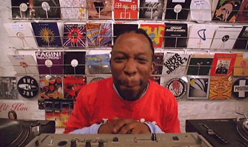

Welcome to first telegram mini-app radio station

We listen the very best music!
Push Yopta 😎
Stay hungry. Stay foolish.
Стив Джобс
If you would like to support us, please send your TON donations to this address. Да,да,да ! Скинулись по 5 тон на ход ноги проекта ! )
🟡 Checking ...